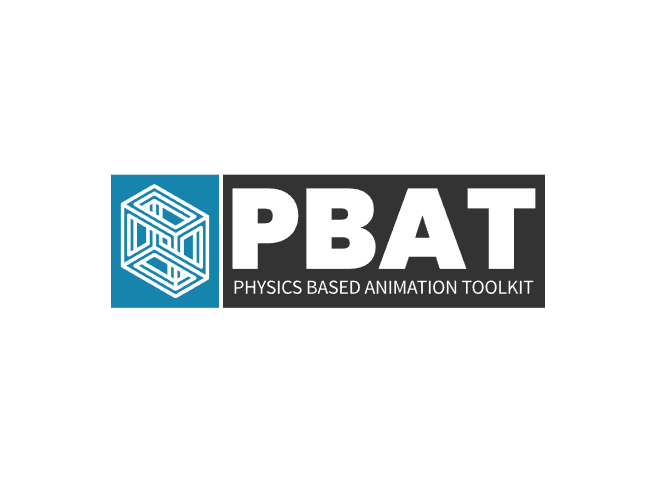
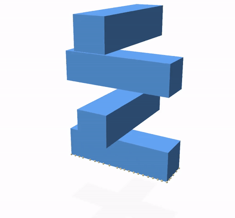
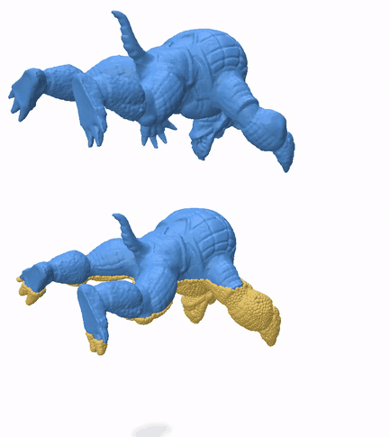

Home¶
We recommend exploring the official CMake documentation to beginner CMake users.
Overview¶
The Physics Based Animation Toolkit (PBAT) is a (mostly templated) cross-platform C++20 library of algorithms and data structures commonly used in computer graphics research on physically-based simulation in dimensions 1,2,3. For most use cases, we recommend using our library via its Python interface, enabling seamless integration into Python’s ecosystem of powerful scientific computing packages.
Features¶
Finite Element Method (FEM) meshes and operators
Dimensions
1,2,3Lagrange shape functions of order
1,2,3Line, triangle, quadrilateral, tetrahedron and hexahedron elements
Hyper elastic material models
Saint-Venant Kirchhoff
Stable Neo-Hookean
Polynomial quadrature rules
Simplices in dimensions
1,2,3Gauss-Legendre quadrature
Spatial query acceleration data structures
Bounding volume hierarchy for triangles (2D+3D) and tetrahedra (3D)
Nearest neighbours
Overlapping primitive pairs
Point containment
GPU algorithms
eXtended Position Based Dynamics (XPBD)
Broad phase collision detection
Sweep and Prune
Linear Bounding Volume Hierarchy
Fixed-size matrix operations in kernel code
Seamless profiling integration via Tracy
Dependencies¶
See vcpkg.json for a versioned list of our dependencies, available via vcpkg (use of vcpkg is not mandatory, as long as dependencies have compatible versions and are discoverable by CMake’s find_package mechanism).
Configuration¶
Option |
Values |
Default |
Description |
|---|---|---|---|
|
|
|
Enable |
|
|
|
Enable |
|
|
|
Enable |
|
|
|
Activate Tracy’s on-demand profiling when |
|
|
|
Link to user-provided Intel MKL installation via CMake’s |
|
|
|
Link to user-provided SuiteSparse installation via CMake’s |
|
|
|
Build project’s library targets as shared/dynamic. |
Our project provides configuration presets that capture typical use configurations. Refer to the CMake presets documentation for more information.
cmake -S <path/to/PhysicsBasedAnimationToolkit> -B <path/to/build> #-D<option>=<value>
# or, alternatively
cmake --preset=<my-favorite-user-preset>
Build¶
Build transparently across platforms using the cmake build CLI.
CMake build targets:
Target |
Description |
|---|---|
|
The PBA Toolkit library. |
|
The test executable, using doctest. |
|
PBAT’s Python extension module, using pybind11. |
For example, to build tests, run:
cmake --build <path/to/build/folder> --target PhysicsBasedAnimationToolkit_Tests --config Release
Install¶
From command line:
cd path/to/PhysicsBasedAnimationToolkit
cmake -S . -B build # -D<option>=<value> ...
cmake --install build --config Release
Alternatively, if vcpkg is installed and VCPKG_ROOT=path/to/vcpkg is set as an environment variable, you can select one of our available presets, for example cmake --preset=default and then install.
Quick start¶
We recommend downloading the Tracy profiler server to analyze execution of PBAT algorithms, available as precompiled executable. PBAT currently supports Tracy 0.10.
C++¶
Take a look at the unit tests, found in the library’s source (.cpp or .cu) files.
Python¶
To download and install from PyPI, run in command line:
pip install pbatoolkit
To use
pbatoolkit’s GPU algorithms, you must build from source, i.e. the prebuiltpbatoolkitpackage hosted from PyPI does not include GPU code.
For a local installation, which builds from source, our Python bindings build relies on Scikit-build-core, which relies on CMake’s install mechanism. As such, you can configure the installation as you typically would when using the CMake CLI directly, by now passing the corresponding CMake arguments in pip’s config-settings parameter (refer to the Scikit-build-core documentation for the relevant parameters). See our pyinstall workflow for working examples of building from source on Linux, MacOS and Windows. Then, assuming that external dependencies are found via CMake’s find_package, you can build and install our Python package pbatoolkit locally and get the most up to date features. Consider using a Python virtual environment for this step.
As an example, assuming use of vcpkg for external dependency management, with VCPKG_ROOT set as an environment variable, run
pip install . --config-settings=cmake.args="--preset=pip-local" -v
on the command line to build pbatoolkit from source. To build with GPU algorithms included, refer to the Configuration section. Additional CMake variables (i.e. CMAKE_CUDA_ARCHITECTURES, CMAKE_CUDA_COMPILER) may be required to be set in order for CMake to discover your local CUDA installation.
Verify pbatoolkit’s contents in Python shell:
import pbatoolkit as pbat
help(pbat.fem)
help(pbat.geometry)
help(pbat.profiling)
help(pbat.math.linalg)
To profile relevant calls to pbatoolkit functions/methods, connect to python.exe in the Tracy profiler server GUI.
All calls to pbat will be profiled on a per-frame basis in the Tracy profiler server GUI.
Use method
profileofpbatoolkit.profiling.Profilerto profile code external to PBAT, allowing for an integrated profiling experience while using various scientific computing packages.def expensive_external_computation(): # Some expensive computation profiler.profile("My expensive external computation", expensive_external_computation)
Tutorial¶
Head over to our hands-on tutorials section to learn more about physics based animation in both theory and practice!
Gallery¶
Below, we show a few examples of what can be done in just a few lines of code using pbatoolkit and Python. Code can be found here.
Harmonic interpolation¶
A smooth (harmonic) function is constructed on Entei, required to evaluate to 1 on its paws, and 0 at the top of its tail, using piece-wise linear (left) and quadratic (right) shape functions. Its isolines are displayed as black curves.


Heat method for geodesic distance computation¶
Approximate geodesic distances are computed from the top center vertex of Metagross by diffusing heat from it (left), and recovering a function whose gradient matches the normalized heat’s negative gradient. Its isolines are displayed as black curves.


Mesh smoothing via diffusion¶
Fine details of Godzilla’s skin are smoothed out by diffusing x,y,z coordinates in time.

Hyper elastic simulation¶
Linear (left) and quadratic (right) shape functions are compared on a hyper elastic simulation of the beam model, whose left side is fixed. Quadratic shape functions result in visually smoother and softer bending.


Inter-penetration free elastodynamic contact¶
Combining pbatoolkit’s FEM+elasticity features and the IPC Toolkit results in guaranteed inter-penetration free contact dynamics between deformable bodies.

Real-time elastodynamics¶
Our GPU implementation of the eXtended Position Based Dynamics (XPBD) algorithm simulates a ~324k element FEM elastic mesh interactively with contact.

Modal analysis¶
The hyper elastic beam’s representative deformation modes, i.e. its low frequency eigen vectors, are animated as time continuous signals.

GPU broad phase collision detection¶
Real-time collision detection between 2 large scale meshes (~324k tetrahedra) is accelerated by highly parallel implementations of the sweep and prune algorithm, or linear bounding volume hierarchies.

Profiling statistics¶
Computation details are gathered when using pbatoolkit and consulted in the Tracy profiling server GUI.

Contributing¶
Coding style¶
A .clang-format description file is provided in the repository root which should be used to enforce a uniform coding style throughout the code base using the clang-format tool. Recent versions of Visual Studio Code and Visual Studio should come bundled with a clang-format installation. On Unix-like systems, clang-format can be installed using your favorite package manager.